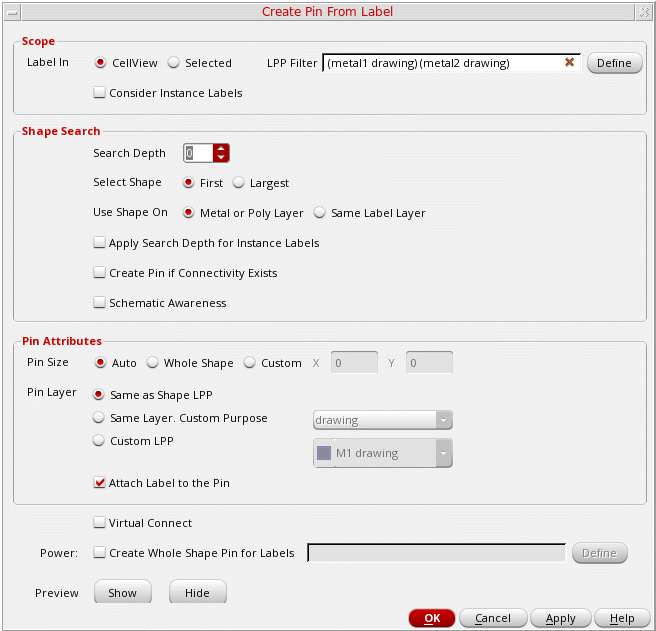
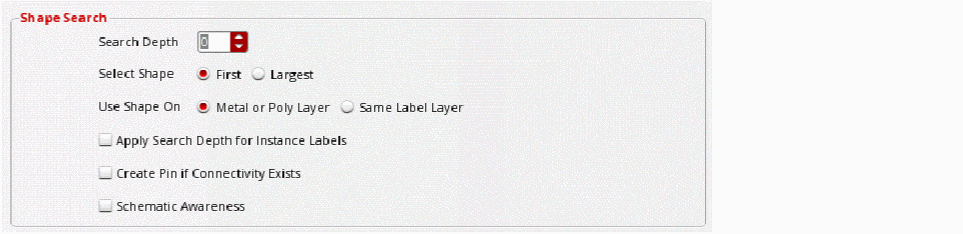
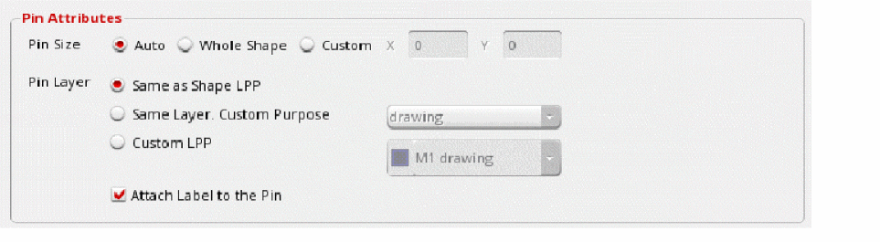
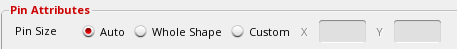
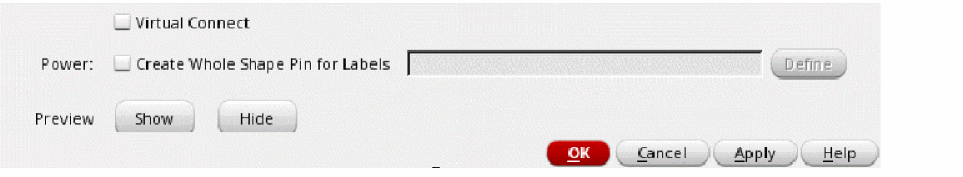

Creating Pins from Labels in the Pin Tool
The Create Pin From Label form lets you create pins from labels and text displays in the layout cellview. The Pin Tool lets you search the design hierarchy for labels, but creates pins only at the top level. The tool searches for shapes and creates pins for labels with their origins overlapping these shapes. You can specify the pin dimensions and the layer on which the pins must be created. The generated pins are centered on the origin of the label or text display from which they are derived and have terminal names matching the labels or text displays.
If there are existing pins on the labels, then duplicate pins are not created. Pins are created either for new labels, or if the bounding box of the new pin does not match an existing pin.
-
Choose Plan – Pin Planning – Pin Tool.
The Pin Browser is displayed. -
Choose Create – Create Pins From Label to display the Create Pin From Label form. The form is divided into the following sections:
 - In the Scope section, you can define the scope of search and, select either Cellview or Selected to specify the target labels.
-
Specify the required LPP Filter to restrict the search only to specific layer-purpose pairs. All other LPPs are ignored. Example:
(metal2 drawing) - You can choose to Consider Instance Labels in the search results, and set the scope to Cellview or Selected.
-
In the Shape Search section, specify the Search Depth, which indicates the level up to which shapes must be searched. For example, if Search Depth is set to 4, then levels 0 through 4 are searched for the required shapes. The default value is 0, which refers to the top-level (level 0).
 - Specify the shape that must be used for pin creation - First or Largest in Select Shape field. First indicates that the first shape that matches the specified criteria must be used. Therefore, the search is stopped as soon as a suitable shape is found. When set to Largest, all matching shapes are retrieved; then the shape with the largest area is identified and used.
- Specify the layer property based on which the search results must be filtered out - Metal or Poly Layer or Same Label Layer in Use Shape On field.
- Select Apply Search Depth for Instance Labels to use the specified Search Depth for instance labels.
- Select Create Pin if Connectivity Exists to create pins only for the labels that are associated with existing nets, terms, or pins in the current cellview. All other labels are ignored.
- Select Schematic Awareness to create only those pins for which corresponding pins are present in the schematic view. When creating a new pin, the tool applies the same direction and signal type attribute as the corresponding schematic pin.
-
In the Pin Attributes section, you can define settings for the pins to be generated.
 -
Specify the Pin Size by choosing Auto, Whole Shape or Custom (X and Y values) option.
 - Specify the Pin Layer by choosing one of the Same as Shape LPP, Same Layer Custom Purpose, or Custom LPP options.
- Select Attach Label to the Pin to attach the labels to their corresponding pins.
-
Select Virtual Connect to enable virtual connection of the pins that are created.
 - Select Create Whole Shape Pin for Labels in the Power section to create power pins of the same shape as their corresponding labels. Click Define to display a list of labels. Select the labels for which power pins must be created.
- Click Show in the Preview section to see a preview of the pins that would be created.
- Click Hide to close the preview.
- Click OK to create the pins.
Consider the following design that contains labels of different shapes. These labels are listed in the Label Browser.
The following images show the result of creating pins from the above labels:
Related Topics
Return to top